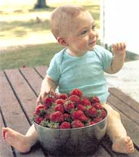
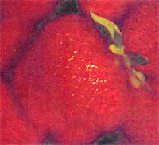
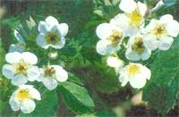
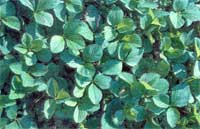
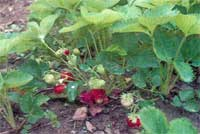
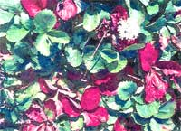
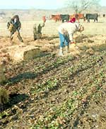
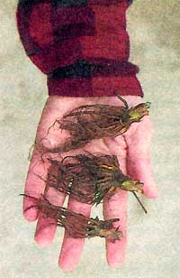
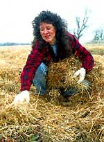
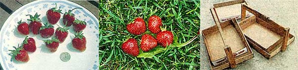

Barters and Bootstraps
From planning to harvesting and sales strategies, how to start a backyard strawberry stand.
Little cellophane packages of out-of-season, greenish-red, sunken-skinned strawberries are selling at the grocery for $2.79 per pound. I'm not exactly sure why they are selling. In fact, even when strawberries are in season for a few weeks early in the spring, the flavor of these shipped-in, underripe commercial varieties is nothing to brag about.
While these sad excuses for strawberries are moldering in the exotic food section next to prickly pear cactus leaves, Carambola, and litchi berries, I am at home nibbling on a tantalizing, bright-red, sun-ripened, lightly-sweetened, partially-thawed, bowl of round little berries that went from my berry patch to the garage freezer in a matter of minutes-thus retaining perfect color, high nutrient content, and flavor that makes you close your eyes in ecstasy. Microwaved for a minute or two on high, then broken apart in a bowl and spooned over vanilla ice cream, or dribbled over hot shortcake biscuits, or merely tucked in a cheek to slowly melt, releasing summer's sun soaked flavor-here aren't many things that can top the taste of home-grown strawberries.
Now that I have finished my sales pitch, I have to admit that to get to the "Let's eat!" stage there is a bit of preparation and work to be done-but the results ...the results.
Looking through a magazine one day, I noticed an offer for a now out-of-date strawberry catalog, and ordered it out of curiosity. I'd been toying with the idea of starting a backyard patch but had no idea how to start. When the catalog arrived with dozens of listings of berry varieties, I read each description carefully.
First, I eliminated those varieties whose claim to fame was gigantic size or excellent shipping quality. The larger berries weren't always disease-resistant, and the commercial varieties promised firm but less flavorful results. Several kinds did well in the Midwest where I farm, and many of those were praised for their freezing quality.
As my choices narrowed, I chose a fool-proof variety that promised to grow in most climates, in most soils, under most any weather conditions and purchased my fast batch of Surecrop berry plants.
After several droughts and a number of floods, we made the decision to switch from the dairy and feed business to raising cattle and more profitable crops. It was clear that during the several years it would take to build our new business into a money-making venture, added income would be necessary. I've always been a stay-at-home mom, substitute-teaching, giving classes in wreath-making, doing freelance writing. This was an opportunity to try something new. With hundreds of acres of open farmland around our home, there was room to expand our small family strawberry patch and open a U-Pick strawberry patch.
Preparation is minimal, but important. One important thing to remember when raising strawberries is that they need full sun. They also need a soil that will drain well. The ground needs to be well-worked, preferably in the fall preceding your spring planting.
Fall plowing gives the freshly-broken soil time to continually thaw and freeze during the winter months, breaking down the large lumps and sod clumps that will occur from plowing virgin soil. It also helps rid the ground of white grubs, which, if they occur in large numbers, can do severe damage to plant roots.
Of course, if you plan to plant an area that has been previously gardened, the ground can be worked in the spring-but berry plants need to be planted so early in the year that the ground is often still too wet to do much cultivation. Try to have the ground worked and ready in the fall if you don't have a plow, you will need to spade the area to a depth of at least 7 or 8 inches. Disking or harrowing frees the soil from clods, and makes planting much easier.
Our U-Pick patch is in a perfect location, as if we had had it made to order. There is an old hay field near the house which slopes gently to the west, providing excellent drainage. Even after a recent three-inch rain, there were only a few puddles standing amongst the plants. Berry plants are quite disease-resistant, but soggy conditions can damage their roots in a matter of days.
Locate your patch away from any tree roots. Tree roots siphon off more underground water than you can imagine. You will notice that any crop growing along a woods' edge or near a stand of maple trees beautifying the lawn will be much shorter and less productive than the same crop a mere fifty feet away.
Soil should not be too heavy, although the not-too-finicky berry plants will grow even in heavy clay. Sandy loam is ideal-but the ideal is not always obtainable. Adding barnyard manure (one thing we had an endless supply of) is good for the patch-to-be, especially if applied a year in advance.
We purchased a soil alkalinity-tester at a local nursery to make sure our soil was suitable for berries. Any wading between 5.5 and 7 is desirable (although in California, berries are grown on soil with a pH of 8!). We had farmed some excellent hay here in years past, so we were quite positive the soil was good-and, sure enough, our soil tested at 6.5.
Finally, it is a good idea to change the location of your berry patch every few years. This decreases the danger of diseases building up in the soil. Insect populations will also be reduced this way.
Just remember: plow up a new area and have it prepared the year before you actually proceed with the switch-over. Planting clover or soybeans in the area before it is plowed will add a helpful dose of organic material.
If you are simply planning on starting a backyard patch or perhaps merely edging your existing garden with a few rows of berries, then watering will not be a problem for you. Berry plants need a lot of water, especially at certain critical times during the growing season, and how you're going to water your patch requires some foresight.
We were in a hurry to start up our U-Pick operation, and we planted our plantlets before we knew how we would water them. Fortunately we were a physically fit family-and became more so by the end of that summer-and were able, at first, to run hoses down to the berry patch. One of us filled watering cans as fast as possible, another of us carried them down the rows, and a third person did the actual watering.
The plants were tiny, it was cool and early in the spring, and the amount of water they needed was small. It rained intermittently But as the rows started to fill in, it became increasingly difficult to figure out where the actual roots of the original plant were, making it almost impossible to do effective watering.
We headed to Wal-Mart, and purchased several coils of soaker hoses. After buying a used water tank from a neighbor, we filled our pockets with quarters, loaded the 1500-gallon tank on the hay truck, and headed down the road to the local water tower. For a quarter, you could buy 100 gallons of water. For under $5, we filled the entire tank.
We parked the truck and the tank at the top of the hay field's incline, connected soaker hoses, laid them gently on top of the berry rows, and opened the valve on the tank. Success! Now I could weed the garden, do the dishes, freeze the green beans-while cheap, life-giving water seeped effortlessly from the black snakelike hoses strung out across the half-acre. Every hour or so I'd have to haul the hoses over onto the next rows, making sure they were straight and lying directly over the berry plants. It took a number of days to water from top to bottom of the large patch, but the plants thrived through a number of rainless weeks.
Farm chores keep my husband so busy that we have not yet had time to hook up a more practical watering system. We have two farm ponds nearby, but they are some distance from the patch and to pipe from them would cost a lot. The other option was to hire a bull dozer to re-dig the nearby pond to make it more dependable in dry years. Either way, there would be some cost involved. Add to this a pump and filter to keep the murky water from clogging up the minute pores of the soaker hoses and you have a very expensive proposition. It will be the old technology for us, for the time being.
However you decide to water your berry garden, be it large or small, plan on giving it an inch or more of water every week-more in sandy soils, less in heavy soils. Berries are vigorous growers and need a lot of moisture; foliage is thick and lush, and the berries are 90% water!
Pine-needle mulch and straw are good insulating mulches. Not only does the mulch help keep the berries clean-especially important in a U-Pick patch-but the soil retains moisture and the ground temperature remains even. The mulches also help discourage weeds.
Wheat straw is a nice, fluffy, easy-to-spread mulch, but its lightness makes it a helpless target of the wind. I've spent hours mulching my patch only to have a strong wind come up in the night and blow it all off. Once it a rained on, the straw will be heavy enough to remain in place. You can also rake some dirt clods onto it.
I love to read the affectionate names that have been given to strawberries: Sparkle, Cardinal, Jewel. Some, such as Surecrop, Honeoye, Earliglow, and Sparkle are more common and are found in many nursery and seed catalogs. These are all-purpose berries that are successfully grown in many parts of the country.
All betties are divided into the following categories: early, mid-season, late mid-season, late season, and everbearing. Earliglow is the very first berry to ripen, and is a com mon variety found in U -Pick patches, despite its small size by the end of the picking season and the fact that it is less winter hardy. All other berries are compared to Earliglow when ripening dates are listed, with some varieties turning red up to two weeks later.
By choosing a number of varieties, you can make your picking season last much longer. Everbearing varieties are very labor-intensive and don't compare to the productivity of regular varieties. They bear a little here and there all year, with heavier crops in June and again in the fall.
Also note which varieties are susceptible or resistant to various root, leaf, and berry diseases. Professional fruit catalogs will give you this information. For a sampling of available varieties, see page 86.
The more plants you order from a berry catalog the less you pay per plant. It was actually cheaper for me to order too many plants and give some away than to order exactly what I needed. For example, 25 plants of the everbearing variety Tribute, can be purchased for a little over $12, plus postage and handling. That's about 48 cents apiece. However, buying 1,000 of the same plant costs you only $122-or about 12 cents each! If possible, get together with other interested berry-growers and combine an order. It can really save you money.
A really nice thing about ordering berries through these catalogs is that you can decide on the shipping date yourself. You could plan a mini-vacation around the proposed planting date, or at least, be perfectly prepared for planting the day before your order arrives. If unforeseen circumstances arise, you can also call and reschedule your shipping dare up to a certain point. Usually a full week's notice is required if you want them to delay your shipment.
You've selected the best variety for you and your area; you've carefully chosen and prepared your patch site; you've phoned in your berry order (or if you just wanted a few plants, you've picked some up at your local nursery center). Next step: planting!
An important ingredient to the success of your planting is how you take care of your young dormant plants when they active in the mail. The plants should be set out right away, if possible. Plantings dates are March or early April in our area, but father north it may be April or May. In the south, make it February or March. The earlier you plant, the better the plants will do, as they will become well-established before the heat of late spring arrives. A light frost will not hurt the plants.
If you can't set out your plants immediately, which I could not do because of terrible, rainy weather-make soup out of the leftovers in your fridge, get rid of the moldy oranges, and-make room for berry boxes. We had three big boxes containing 1500 plants in our fridge, with one box stored on the front porch where I hoped it would be cool enough.
There was a definite difference between the refrigerated plants (moist plump roots) and the plants sitting outside in the cold, dry air (light-colored dry roots). In the end, they all grew; I treated them well enough. If you can't keep them refrigerated or cool, try heeling them in-setting them in a temporary trench in-the ground outdoors. However, this causes the plants to go through a second shock later when they must be lifted and transplanted yet again.
This is simple. Submerge the plants in a bucket of water and let them soak up moisture just before planting. This next step isn't required, but I took a scissors and snipped off any long, scraggly or broken roots. This took very little time, and it made it much easier to plant-I had a neat little bundle of sturdy roots ready to spread out in the holes.
Put 50 to 100 at a time in the bucket of water, leaving the remaining plants in the refrigerator to protect them from sun or wind or drying heat. Keep the plants in the bucket submerged at all times.
Strawberries spread by means of runners-baby plants that spread from their mothers on little "umbilical cord" stems. These plants take root and in turn become mothers, to new babies. This goes on all summer, with each plant making up to 15 or more runners. When you are planting your tiny dead-looking little plants in the spring you need to keep that fact in mind.
There are several acceptable methods of spacing berry plants. In trying to cut costs, we decided to disregard the berry catalogs' suggestions of planting berries 18 to 24 inches apart, in rows 3 feet apart.
We eventually found that it was best to set the plants 36 inches apart, in rows three feet apart. By the end of the summer, there was barely walking space anywhere in the patch. Now you might think that a mass of luxuriant, intertwined runners would he productive and desirable, but it isn't. Placing the new plants any closer than 36 inches produces overcrowding, which seriously decreases production and size of berries. A thinner row produces larger berries because more sun is made available per plant.
Any runners that are formed during the fall are considered weeds and should be cut off. There are even special commercial machines produced just for this purpose. The fall runners are too small to have a fruiting capacity, but are, all the same, using up soil nutrients. In fact, one drawback of one of my favorite berry varieties, Surecrop, is that it is a heavy producer of runners. It spreads so quickly that row rejuvenation must be done more frequently than with other varieties.
The matted-row method of planting is another alternative and is used by some commercial growers. It consists of allowing more runners to "set," funning rows that are up to two feet wide. Experiments indicate that the narrow-row system out-yields the matted-row method; but matted-row patches are more adapted to mechanized farming, which reduces cost per acre. Also, with more plants in one area, losses to drought, disease, severe winters, etc., are not as tragic.
As the runners grow and spread, try to move them-they don't root right away-back into the rows so that a walking path remains. If you have too many, as I did, find a friend who needs some plants, and either sell them or give them away.
This is one area that all berry specialists, catalogs, articles, and direction booklets agree on-in fact, there is always a helpful life sketch alongside the berry information, showing the "too deep," "too shallow," and "just right" level at which to plant your berries. The roots need to be completely covered-but the crown cannot be, or the entire plant will rot. You must take a little extra time to do this right, or all of your time will be wasted. I like to dig a hole then make a conical mound of dirt in the middle of it. I set the plant on top of this mound, spread the roots out evenly, and train them down the sides of the "mountain." Then I fill the hole in with good din, press firmly, and check to make sure the crown (the fat little bump just above the roots) is showing. After watering, make sure the roots are still covered. If your dirt is soft, the water may wash away some of your soil. Exposed roots will also kill the plant.
Planting berries in black plastic or spun bonded fabric covers is becoming popular, and there are many advantages to this method: few weeds, conserved moisture, clean berries, earlier harvests. To plant, poke holes in the plastic at proper intervals and carefully insert your plant. However, doing it on a large scale would be expensive and watering would not be a simple task.
This is such a gloomy activity that some folks can't bring themselves to do it. Your new plants have grown large and lush. They are healthy, strong, and full of vigor. And now they are blossoming; pretty white blooms spread across your patch like a flurry of summer snowflakes ...and you must pick them all off. De-blooming actually allows the plants to grow much faster and produce more runners for a good picking bed next spring. If the plant tries to form berries so soon after planting, its energy will be sapped and its overall growth will slow. Of course, you can leave a few plants blooming to make some berries if you just can't wait until next year, but you will notice the difference in size between the berry-making plants and the runner-making plants. I take a small scissors, walking up and down the rows every few days, snipping off the entire blossom stalk. Berries blossom over several days, so this has to be done several times.
I've made the mistake of putting too much cow manure on my plants-they were the tallest, most lush, bushiest, most absolutely beautiful plants you ever saw. It was like a jungle, and I was showing everyone who came by my success in berry growing.
But I hardly got a berry. Those that did form succumbed to the gray mold, a disease that attacks berries, especially in cool damp conditions. From this embarrassing experience, I learned the hard way that too much fertilizer can be more harmful than too little.
A good time to fertilize, if you really think the plants need it (An 8-8-8 or 10-10-10 variety, but remember, they grow well under most conditions), is in early fall, as this is the time that the fruit buds, which determine the spring crop, are developing.
You can obtain a Home Fruit Spray Schedule from your local extension office. It helps you determine what treatments may be necessary to care for berry plants in your particular area. Gray mold was the only serious disease problem I've ever encountered in my patch, and this was greatly reduced by using an electric weed-trimmer and removing thick foliage that was shading berries underneath. For this and other foliage diseases, benomyl and captan can be alternately sprayed, unless you're committed to organic growing.
A nice covering of mulch to help over-winter your patch is mandatory in the northern states. It is recommended in most others. Before night-time temperatures reach 20 degrees or below, apply about 3 inches of straw, pine needles, or marsh grass. Some authorities suggest adding another foot of mulch once the ground freezes hard. The mulch helps maintain an even ground temperature and prevents the constant heaving of unprotected plants as the ground continually freezes and thaws. Leave mulch in place until early spring, when the plants show their first signs of growth. Then, push the mulch into the rows to help in keeping the beds dean. This provides a nice path for U-Pick customers to walk on and helps keep the berries from being splattered with mud during a rain.
This is a problem you are very likely to encounter. Once birds discover that there are red ripe berries for the having, you will most likely have unwanted guests until the season is over. One quaint solution is to scatter red-painted pebbles throughout your patch before the berries actually ripen. The idea is that birds will peck at the stones and quickly lose interest in your strawberries.
Other solutions include laying netting over your patch (convenient if your patch is a little one), and hanging up those big yellow "scary eyeballs" here and there around your patch. But putting them up after the patch has been discovered is practically useless, which we found out after a serious invasion of cedar waxwings descended upon our ripening berry patch. They ignored the scary ball, a fake cat, a garden hose "snake," lawn chairs, and even us! They are a fairly tame bird anyway, and being fruit-lovers, the temptation of big ripe Surecrop berries was enough to make them throw caution to the wind and attack, even while we stood within yards of the birds, throwing stuff at them! After eating all the red berries, they started in on the pinks and whites. In the end, they were even pecking holes in the green ones.
You can order a variety of sophisticated bird scarers from catalogs. One machine fires shots at irregular intervals from 1 to 30 minutes apart. Another, the Bird-X-Peller, emits actual bird distress cries from speakers. You can also purchase metal tape that blows in the wind to scare off would-be diners. There is also a deer repellent available.
This is the moment you've been waiting for. You've set out your plants, cared for them through the spring, summer, and fall. You've uncovered them in this their second spring, and have watched as leaves unfurled and turned a rich and healthy green. This time, the buds that have burst into bloom are allowed to remain. And by May or June, depending on your growing season or your berry variety, you are eagerly watching little green berries begin to turn white, then pink, and then-RIPE! You've done it! You've successfully grown a patch of delectable, healthful, freezable, profitable strawberries. Reach down and pick the biggest one you can find. Now, pop it into your mouth. This is your reward.
As you continue to pick your crop, remember that it is best to pick in the cool of the morning. If picked at the end of the day, the berries will darken and age more quickly. Don't stack your berries over a few inches deep in your container. And never wash the berries until just before you're ready to eat them. Damp berries spoil quickly.
No, you're not done for the year. Once the berries are finished producing and you have harvested all of your berries, get out the mower. Set the blade on a high setting, so as not to damage the plant crowns, and mow off all the aging foliage. This will help control disease. Keep watering your plants. Remember that early fail is the plant's fruit-bud production period. Even in winter, if it is exceptionally dry, watering is important. And don't forget to mulch for the winter.
Fall plantings are possible. A friend of minutes has great success with planlets that he dug from my overcrowded patch and set out in late September. He does this every couple of years, and says that because of the growth in the fall, and the early start they get in the spring, he gets quite a good crop of berries from them. If you do plant in the fall, use closer spacing.
Some folks never bother to do this. They either are satisfied with increasingly smaller berries, or else they allow their patch to eventually die out. You can leave your patch undisturbed for up to five years and stiff have acceptable harvests, but if you are attempting to sell your berries to the public, you really should redo your patch every few years. One method that we have tried and found to be quite simple is to till up the original rows of the patch, leaving only a narrow strip of new runners in between. By next year, these remaining plants will have spread, and you will have brand new mother plants. Some folks find it easier to simply order a new batch of plants and start over in a new, weed-free area, especially if you have let the grass get a foothold between your plants.
Opening a patch for community picking is a pleasant way to make money. Although the profit margin is not incredibly large-you may be able to clear several thousand dollars per acre-a public berry patch is a good way to meet neighbors and discover other products folks would be interested in buying from you-straw bales, cut flowers, crafts.
Before letting anyone set foot on your property, contact your insurance agent. You should be able to get a by-the-month insurance rate which will protect you in case of an injury occurring on your property. A sign saying "Not responsible for injuries or damages" is of no real value if someone decides to sue though the chances of customer injury are small.
You will need to set a price per pound on your berries. Check around to see if there are other local berry sellers and find what they are asking. In our area, you can get 65 to 70 cents per pound. A friend in northwest Pennsylvania asks four dollars for a six-pound container, which is about the same price per pound. To estimate how much money you might make, count on each berry plant, or each foot of row, to produce about 1 1/2 quarts.
Advertise your patch heavily the first season or two until folks realize that you are in the area. Announce that your patch will be ready for picking in about a week-end then hope that the weather cooperates. This takes some careful judgment on your part, and you may not be completely accurate. Install an answering machine to take the myriad phone calls you will receive from interested folks asking, "When?" "Where?" "How much?" Put up road signs at important junctions such as major highways, intersections, and businesses that are relatively close by. Be prepared to have a sign or two stolen.
Making a wooden carrier for U-Pickers is a good idea. Design the floor so that it will hold the low cardboard boxes that canned vegetables, alcoholic beverages, etc., are shipped in. Many stores will save these for you if you ask. When the berries are picked, the canon is simply lifted out of the carrier. With this method, there is no need to squash berries by dumping them into another container. Berry baskets may be ordered from the fruit catalogs for about 25 cents each, or about $60 for a case lot of 500.
Purchase small vinyl flags for customers to move along the rows as they pick, planting the flag wherever they have left off. One problem with UPickers is that they are after the biggest and easiest-to-reach berries. You may want to put up a "Please Pick Clean!" sign and try to gently get this message across to your customers.
Be prepared for sales with a cash box, calculator, good scales, paper and pen. You might also display other items for sale-recipe sheers, magnets, crags, booklets, birdhouses, or other kinds of garden produce.
Yes, you will have customers. A lot of older folks remember picking berries when they were young and enjoy the outdoor activity on a pleasant spring day. They will bring their grandchildren.
Remember-you have an excellent product. You rarely meet a soul who doesn't appreciate fresh strawberries, and at under seventy cents a pound, your merchandise is quite a deal.
Let the berries begin!
|
 Blossoms in April. The black centers are the only indications of frost damage. These blackened flowers will not produce berries. |
 Strawberry leaves are hardy, and some varieties stay green long into the winter. These leaves are rimmed with an October frost. |
 Although they start out looking unpromising, the plants soon spread to a mass of healthy green foliage, often filling-in the rows entirely. |
|
Ripening berries. Fruit ripens over a period of weeks, extending the harvest and making picking time slightly less frantic. |
 Berry plants turning colors in the fall. |
 Mulching in January. |
|
 Bare root plants as they are received from suppliers. I'm hay mulching over to the right. |
 Normal growing season berries compared to a quarter. In the middle are several huge ones, and, finally, home-made baskets with cardboard boxes. |
 |
|
 |
 |
|